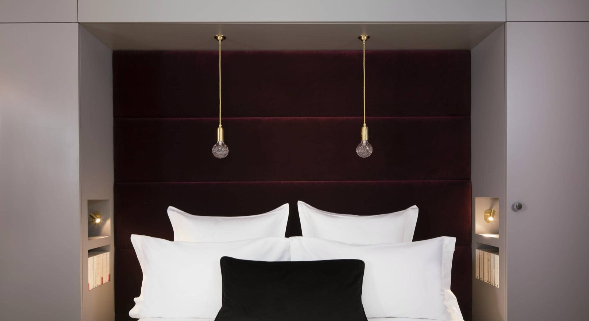

Les plus beaux hôtels de Bordeaux : 10 adresses sélectionnées
Bordeaux compte aujourd'hui une offre hôtelière qui rivalise avec Lyon ou Marseille.
Dix établissements passés au crible, avec pour chacun son score, son bémol, et son
indice vin, notre mesure de l'ancrage viticole réel.
Par Lucas Lecoq, rédacteur en chef✺Publié le 21 juillet 2026✺15 min de lecture
La place de la Bourse et son Miroir d'eau, cœur du Bordeaux classé à l'UNESCO.
Photo : Léna / Wikimedia Commons, CC BY 3.0.
En résuméLe verdict tient en une ligne
Hôtel Cardinal (centre historique), 9,2/10 :
dix suites dans un hôtel particulier du XVIIIe, cave de 400 bouteilles.
Notre numéro un.
Hôtel Burdigala (Mériadeck), 8,6/10 :
le plus vivant, restaurant Madame B et cave de crus classés.
Selon votre budget, la réponse change : de
83 € la nuit au Mama Shelter à 310 € à l'Hôtel des
Quinconces en basse saison. Et l'écart entre haute et basse saison va de 22 % à 53 %,
c'est le levier le plus rentable de votre réservation.
Bordeaux a changé de visage
La LGV Paris-Bordeaux (2 h 04 depuis Montparnasse depuis 2017), la réhabilitation spectaculaire des quais de la Garonne et l'essor du tourisme viticole autour des vignobles bordelais ont transformé la ville en destination week-end de premier plan. L'offre hôtelière a suivi : palaces rénovés, boutique-hôtels confidentiels, adresses design sur les quais. Mais entre le palace classique place de la Comédie et le boutique-hôtel design des Bassins à flots, le choix n'est pas évident.
Données propriétaires LMHS : comment nous notons
Ce palmarès applique la grille LMHS Destination, notée sur 10, qui pondère cinq critères : rapport qualité-prix (25 %), un critère thématique adapté à l'objet du classement (25 %, ici la singularité bordelaise : ancrage local, architecture, identité de ville), la localisation (20 %), le service (20 %) et les avis clients vérifiés (10 %). Elle se distingue du Protocole LMHS classique, noté sur 20 après visite anonyme, le détail des deux instruments est publié sur notre page méthode.
Nous y ajoutons ici un indicateur propre à cette destination : l'indice vin LMHS, noté sur 5. Il mesure l'intégration réelle de la culture viticole bordelaise dans l'expérience hôtelière, cave à vins, sommelier dédié, partenariat avec un château, dîner vigneron, excursions organisées. Dans la capitale mondiale du vin, une carte des vins correcte ne suffit pas à faire un hôtel viticole.
Évaluation réalisée sur la base de séjours tests, de données clients agrégées (TripAdvisor, Booking, Expedia) et des informations officielles des établissements, relevés de juillet 2026.
Hôtel
Étoiles
Score LMHS
Indice vin
À partir de
Hôtel Cardinal
5★
9,2/10
🍷🍷🍷🍷🍷5/5
212 €
Hôtel Yndo
5★
8,9/10
🍷🍷🍷🍷🍷5/5
200 €
Hôtel Burdigala
4★
8,6/10
🍷🍷🍷🍷🍷4/5
198 €
InterContinental Le Grand Hôtel
5★
8,4/10
🍷🍷🍷🍷🍷4/5
249 €
Le Boutique Hôtel & Spa
5★
8,3/10
🍷🍷🍷🍷🍷5/5
185 €
Hôtel des Quinconces
5★
8,1/10
🍷🍷🍷🍷🍷2/5
310 €
Hôtel de Sèze
4★
7,9/10
🍷🍷🍷🍷🍷3/5
153 €
Seeko'o Hôtel
4★
7,7/10
🍷🍷🍷🍷🍷1/5
84 €
Mama Shelter Bordeaux
3★
7,2/10
🍷🍷🍷🍷🍷1/5
83 €
Hôtel Acantha (Bleu de Mer)
2★
7,0/10
🍷🍷🍷🍷🍷1/5
90 €
Le mot de LucasCe qui a vraiment changé
Bordeaux a longtemps souffert d'un paradoxe : capitale mondiale du vin, mais offre hôtelière médiocre. Ce n'est plus vrai depuis 2018. Aujourd'hui, ce qui me frappe, c'est la montée en puissance des boutique-hôtels indépendants, Cardinal, Yndo, Quinconces, qui ont compris que Bordeaux ne se vend pas avec des moquettes beiges et des buffets standardisés, mais avec du vin, de la pierre du XVIIIe et une identité de ville. Le palace InterContinental reste impressionnant, mais c'est dans ces petites maisons qu'on comprend vraiment pourquoi Bordeaux est inscrite à l'UNESCO.
Lucas Lecoq, rédacteur en chef
Notre sélection : les 10 meilleurs hôtels de Bordeaux
01

Hôtel Cardinal 9,2/10
Centre historique, 4 rue Élisée Reclus, à 100 m de la cathédrale Saint-André, face à l'hôtel de ville.
Dix suites. Pas une chambre de plus. L'Hôtel Cardinal s'est installé dans un hôtel particulier du XVIIIe siècle avec une discrétion absolue, façade sobre, porte cochère, et derrière : des suites personnalisées de 35 à 60 m², décorées avec un soin maniaque. La suite Cardinal, la plus grande, donne sur une cour intérieure silencieuse. Le petit-déjeuner gastronomique est livré en chambre. Pas de restaurant, pas de bar ouvert au public, c'est voulu. L'hôtel vit en circuit fermé, pour ses hôtes uniquement.
Ce qu'on aime : la cave de 400 bouteilles sélectionnées avec le négociant Duclot (rive gauche, rive droite, champagnes), les dégustations privées accompagnées de planches de charcuteries fines. L'hôtel viticole par excellence, sans en faire trop.
Le bémol LMHS : aucun restaurant ni bar sur place, pour dîner à l'hôtel, c'est service en chambre uniquement. Sur trois nuits, ça peut peser.
Pour qui : couples en escapade, amateurs de vin sérieux, l'intimité d'une maison privée · Dès 212 €/nuit, jusqu'à 428 € en haute saison · 🍷🍷🍷🍷🍷Indice vin 5/5
02
Hôtel Yndo 8,9/10
Centre, 108 rue Abbé de l'Épée, entre la place Gambetta et Saint-Seurin, à 15 min à pied du Grand Théâtre.
Vingt chambres et suites dans un hôtel particulier du XIXe siècle transformé par Agnès Guiot du Doignon. L'identité est claire : artisanat d'art bordelais, galeries temporaires, vélos gratuits pour explorer la ville. La suite Yndo (55 m², salon, jardin) est probablement la plus belle chambre indépendante de Bordeaux. Le restaurant Table d'Agnès travaille les produits du marché, saison par saison. En 2024, l'hôtel est passé de douze à vingt clés en aménageant huit chambres supplémentaires, dont trois suites, dans un ancien atelier d'ébénisterie sur cour, sans dénaturer l'esprit maison.
Ce qu'on aime : le label « Vignobles et Découvertes » est ici concret. L'hôtel organise des excursions vers Saint-Émilion et le Vignoble Bardet, offre un verre de vin à chaque résident, et propose des dégustations de vignerons bordelais à l'apéritif.
Le bémol LMHS : pas de spa ni de piscine. Pour un 5 étoiles à ce tarif, certains voyageurs s'y attendent. Le parking à 35 €/jour est aussi l'un des plus chers de la sélection.
Pour qui : amateurs d'art et de design, œnophiles, un hôtel de centre-ville avec une âme · Dès 200 €/nuit, jusqu'à 332 € · 🍷🍷🍷🍷🍷Indice vin 5/5
03
Hôtel Burdigala by Inwood Hotels 8,6/10
Mériadeck, 115 rue Georges Bonnac, à 6 min à pied du tram A, 700 m du centre historique.
Le boutique-hôtel le plus couru de Bordeaux, 3e sur TripAdvisor avec 4,8/5 sur 217 avis, Travellers' Choice 2026. Repris par Inwood Hotels et reclassé 4 étoiles avec des prestations de 5, il a été entièrement rénové par Roque Intérieurs fin 2023. 82 chambres dans un esprit lifestyle assumé : grand atrium vitré, bar Billy, restaurant Madame B avec le chef Grégory Vingadassalon (ex-Alain Ducasse). La cave affiche des crus classés du Médoc, de Saint-Émilion et de Pomerol, avec un sommelier pour guider les accords.
Ce qu'on aime : l'ambiance « hub du quartier », les Bordelais eux-mêmes viennent déjeuner au Madame B. C'est l'adresse la plus vivante de la sélection.
Le bémol LMHS : Mériadeck n'est pas le quartier le plus séduisant de Bordeaux. On est à 700 m du centre, mais à pied on traverse des rues peu pittoresques. Et la communication digitale de l'hôtel, sept e-mails et un SMS avant le séjour, peut agacer.
Pour qui : voyageurs d'affaires, couples en quête d'une adresse vivante, amateurs de gastronomie · Dès 198 €/nuit, jusqu'à 327 € · 🍷🍷🍷🍷🍷Indice vin 4/5
04
InterContinental Bordeaux : Le Grand Hôtel 8,4/10
Triangle d'Or, 2-5 place de la Comédie, face au Grand Théâtre.
Le palace de Bordeaux. Conçu par Jacques Garcia, rouvert en 2007 après une restauration de 100 millions d'euros, il occupe un bâtiment néoclassique du XVIIIe siècle face à l'Opéra. Le Pressoir d'Argent Gordon Ramsay (2 étoiles Michelin) et sa cave de 550 vins fins, le Spa Guerlain avec piscine intérieure, les suites avec jacuzzi privé et vue à 360° sur les toits : c'est le palace classique, sans compromis. 130 chambres et suites.
Ce qu'on aime : l'emplacement est imbattable. Sortir de l'hôtel et se retrouver face au Grand Théâtre illuminé, c'est une expérience bordelaise à part entière.
Le bémol LMHS : le petit-déjeuner à 38 € et certaines incohérences de service signalées dans les avis récents font tache pour un 5 étoiles à ce tarif. La décoration de certaines chambres commence à dater malgré le standing affiché.
Pour qui : le palace bordelais de référence, la gastronomie étoilée, les séjours d'exception · Dès 249 €/nuit, jusqu'à 531 € · 🍷🍷🍷🍷🍷Indice vin 4/5
05
Le Boutique Hôtel & Spa 8,3/10
Centre, 3 rue Lafaurie de Monbadon, à 1 min de la place Gambetta.
Hôtel particulier du XVIIIe siècle passé 5 étoiles en mars 2020. 27 chambres et suites personnalisées, piscine intérieure, spa (sauna, hammam, jacuzzi), terrasse sous un châtaignier centenaire. Mais ce qui distingue vraiment cet établissement, c'est son Wine Bar : 250 vins locaux sélectionnés par une sommelière bordelaise, ateliers de dégustation intimistes (5 vins dès 50 €/personne, dix participants maximum), brunch dominical. C'est l'adresse où l'on comprend le mieux la culture viticole bordelaise sans quitter l'hôtel.
Ce qu'on aime : le rapport qualité-prix pour un 5 étoiles, à partir de 185 €, c'est l'entrée de gamme la plus accessible de la catégorie dans notre sélection.
Le bémol LMHS : pas de restaurant gastronomique à proprement parler, le Wine Bar sert des planches et des quiches, pas un vrai dîner. Pour un séjour gourmand complet, il faudra sortir.
Pour qui : amateurs de vin, couples, un 5 étoiles accessible avec une vraie identité bordelaise · Dès 185 €/nuit, jusqu'à 362 € · 🍷🍷🍷🍷🍷Indice vin 5/5
06
Hôtel des Quinconces 8,1/10
Chartrons / Quinconces, 22 cours du Maréchal Foch, entre le Jardin public et la place des Quinconces, à 100 m du CAPC.
Neuf chambres dans l'ancien consulat américain de Bordeaux. Voilà une adresse qui n'existe nulle part ailleurs. Classé 5 étoiles, l'hôtel fonctionne comme une maison privée : ambiance zen, moderne et atypique, service ultra-personnalisé (4,9/5 sur TripAdvisor), petit-déjeuner dans le patio. Les chambres sont spacieuses, les lits impeccables, les produits Clarins offerts. À 310 €, c'est le tarif d'entrée le plus élevé de la sélection, mais les avis justifient chaque euro.
Ce qu'on aime : la discrétion totale. Pas d'enseigne lumineuse, porte d'entrée fermée en permanence. C'est l'adresse qu'on ne trouve que si on la cherche.
Le bémol LMHS : certaines chambres ont une douche à l'italienne sans porte, ce qui rend la salle de bains humide. Les capsules de café facturées 1,50 € l'unité alors qu'elles sont présentées comme offertes : un manque de transparence agaçant.
Pour qui : l'intimité absolue, les amateurs d'architecture historique, les couples · Dès 310 €/nuit, jusqu'à 400 € · 🍷🍷🍷🍷🍷Indice vin 2/5
07
Hôtel de Sèze 7,9/10
Triangle d'Or, 23 allées de Tourny, entre la place des Quinconces et les allées de Tourny.
55 chambres dont 3 suites, dans une maison bordelaise classique du XVIIIe siècle revisitée. C'est l'adresse 4 étoiles la plus complète de Bordeaux : restaurant bistronomique Le Comptoir de Sèze (chef Jean-Christophe Martinez, menu à 29 €), bar-lounge avec fumoir et cave à cigares, spa labellisé « Spas de France », golf privé réservé aux clients. La plus polyvalente de la sélection, affaires, famille, romantique, tout fonctionne.
Ce qu'on aime : le label « Vignobles et Découvertes » et la carte des grands vins de Bordeaux au Comptoir de Sèze. Le Bar à Vin du CIVB est à deux minutes à pied.
Le bémol LMHS : les chambres standard (18 m²) sont petites pour le prix. Le spa est bien, mais les créneaux partent vite, la réservation à l'avance est obligatoire, ce qui casse la spontanéité d'un séjour.
Pour qui : ceux qui veulent tout sur place (restaurant, spa, bar), familles, clientèle d'affaires · Dès 153 €/nuit, jusqu'à 291 € · 🍷🍷🍷🍷🍷Indice vin 3/5
08
Seeko'o Hôtel 7,7/10
Bassins à flots / Quais, 54 quai de Bacalan, à 800 m de la Cité du Vin, arrêt de tram « Les Hangars » à 2 min.
L'hôtel design de Bordeaux. Sa façade en forme de glaçon blanc sur les quais de la Garonne est devenue une icône de la réhabilitation des quais. 44 chambres rénovées en 2017 (27 m² minimum), cinq catégories dont une suite avec terrasse panoramique. Pas de restaurant, un bar et un espace détente. Les chambres sont des cocons lumineux, conçus par le cabinet King Kong. C'est l'hôtel qui incarne le mieux la mutation urbaine de Bordeaux.
Ce qu'on aime : le rapport qualité-prix. À partir de 84 €, c'est l'entrée de gamme design la plus accessible de la sélection. Et la vue sur la Garonne depuis les chambres côté quai est imbattable.
Le bémol LMHS : pas de restaurant, pas de spa. Certains voyageurs signalent du bruit côté quai et un service parfois inégal. Malgré ses 800 m de la Cité du Vin, l'indice vin reste au plancher : la proximité n'est pas une intégration.
Pour qui : amateurs de design, visiteurs de la Cité du Vin, budgets intermédiaires · Dès 84 €/nuit, jusqu'à 140 € · 🍷🍷🍷🍷🍷Indice vin 1/5
09
Mama Shelter Bordeaux 7,2/10
Hypercentre, 19 rue Poquelin Molière, place Saint-Christoly, en plein cœur piéton.
97 chambres dessinées par Philippe Starck, literie haut de gamme, rooftop avec vue sur les toits bordelais. C'est l'hôtel pour ceux qui veulent du design accessible et une ambiance festive. Le Mama Rooftop est l'un des bars les plus courus de Bordeaux en été. L'emplacement est parfait, tout est à pied. Les prix sont parmi les plus accessibles de la sélection.
Ce qu'on aime : l'énergie du lieu. C'est l'un des rares hôtels de la ville où l'on croise autant de Bordelais que de touristes.
Le bémol LMHS : l'ambiance « club » peut être épuisante sur la durée, couloirs sombres, musique tardive, salle de petit-déjeuner à l'éclairage de boîte de nuit. Pas adapté aux familles avec enfants ni aux voyageurs sensibles au bruit. L'ancrage viticole est quasi nul.
Pour qui : jeunes voyageurs, groupes d'amis, city-breaks festifs · Dès 83 €/nuit, jusqu'à 162 € · 🍷🍷🍷🍷🍷Indice vin 1/5
10
Hôtel Acantha (Bleu de Mer) 7,0/10
Saint-Pierre / Quais, 12-14 rue Saint-Rémi, à 50 m de la place de la Bourse et du Miroir d'eau.
La surprise de cette sélection. Classé 2 étoiles, il joue dans une autre catégorie que les précédents, mais son emplacement est exceptionnel : à 50 m du Miroir d'eau, dans la rue piétonne Saint-Rémi, au cœur du quartier historique classé à l'UNESCO. 20 chambres rénovées, petit-déjeuner bio, accueil noté 9,7/10 sur Booking. Pour moins de 100 € en basse saison, c'est l'option centre-ville sans se ruiner.
Ce qu'on aime : l'emplacement, tout simplement. Aucun autre hôtel de la sélection n'est aussi proche du Miroir d'eau et de la place de la Bourse.
Le bémol LMHS : pas de climatisation dans toutes les chambres (problème en été), peu de rangements, bruit du tram côté rue. C'est un 2 étoiles bien tenu, pas un boutique-hôtel, calibrez vos attentes en conséquence.
Pour qui : budgets serrés qui veulent être au cœur de Bordeaux, séjours courts · Dès 90 €/nuit, jusqu'à 120 € · 🍷🍷🍷🍷🍷Indice vin 1/5
Par quartier : quel hôtel selon votre Bordeaux
Triangle d'Or et hypercentre
C'est le cœur de Bordeaux, entre la place de la Comédie, les allées de Tourny et la place Gambetta. On y trouve les adresses les plus emblématiques : l'InterContinental Le Grand Hôtel face au Grand Théâtre pour le palace absolu, l'Hôtel de Sèze sur les allées de Tourny pour le 4 étoiles complet, et Le Boutique Hôtel & Spa à une minute de Gambetta pour le 5 étoiles le plus accessible. Le quartier idéal pour un premier séjour, tout est à pied.
Les Quais et les Chartrons
La grande réussite urbaine de Bordeaux de la dernière décennie. Les quais de la Garonne réhabilités, les Bassins à flots, la Cité du Vin : c'est ici que Bordeaux a changé de visage. Le Seeko'o Hôtel est l'hôtel design de référence de ce secteur, à 800 m de la Cité du Vin. L'Hôtel des Quinconces est à la limite des Chartrons, dans un quartier plus résidentiel et calme. Pour les amateurs d'œnotourisme, la Cité du Vin est à dix minutes à pied, et nos articles sur la vinothérapie bordelaise complètent parfaitement ce séjour.
Saint-Pierre et quartiers historiques
Le cœur médiéval de Bordeaux, autour de la cathédrale Saint-André et de la place de la Bourse. C'est ici que se cachent les deux pépites les plus intimes de la sélection. L'Hôtel Cardinal (à 100 m de la cathédrale) est notre numéro un absolu pour l'intimité et la culture viticole. L'Hôtel Acantha / Bleu de Mer (rue Saint-Rémi) offre l'emplacement le plus central pour le prix le plus bas. L'Hôtel Yndo est à quinze minutes à pied, dans un quartier résidentiel calme entre Gambetta et Saint-Seurin.
Selon la grille LMHS Destination, l'Hôtel Cardinal obtient le score le plus élevé (9,2/10) pour son rapport intimité-emplacement-singularité. Pour le luxe grand format, l'InterContinental Le Grand Hôtel reste la référence palace de la ville. Tout dépend de ce que vous cherchez : une maison confidentielle de dix suites ou un palace de 130 chambres face à l'Opéra.
Où dormir à Bordeaux pour être au centre et bien placé ?
Le Triangle d'Or (allées de Tourny, place de la Comédie) concentre les meilleures adresses : l'InterContinental, l'Hôtel de Sèze et l'Hôtel des Quinconces sont tous à moins de dix minutes à pied des sites majeurs. Pour le quartier historique strict (cathédrale, place de la Bourse), l'Hôtel Cardinal et l'Acantha / Bleu de Mer sont imbattables.
Quels hôtels de Bordeaux sont les plus proches de la culture du vin ?
Trois adresses obtiennent l'indice vin maximal (5/5) : l'Hôtel Yndo (label Vignobles et Découvertes, excursions à Saint-Émilion), l'Hôtel Cardinal (cave de 400 bouteilles sélectionnées avec Duclot) et Le Boutique Hôtel & Spa (wine bar de 250 références et sommelière dédiée). À l'inverse, le Seeko'o est à 800 m de la Cité du Vin mais n'obtient que 1/5 : la proximité géographique n'est pas une intégration.
Quel boutique-hôtel choisir à Bordeaux ?
Pour un boutique-hôtel au sens strict, moins de 30 chambres, identité forte, trois adresses : l'Hôtel Cardinal (10 suites, XVIIIe siècle, cave à vins), l'Hôtel Yndo (20 chambres, artisanat d'art, jardin) et l'Hôtel des Quinconces (9 chambres, ancien consulat américain). Ces trois adresses n'ont rien d'interchangeable, chacune a une personnalité distincte.
Quelle est la meilleure période pour réserver un hôtel à Bordeaux ?
La basse saison (janvier-février) fait chuter les tarifs de 22 % à 53 % selon les établissements, l'Hôtel des Quinconces bouge le moins (−22 %), l'InterContinental le plus (−53 %). La haute saison va de juin à septembre, avec un pic en septembre au moment des vendanges et des grands événements viticoles : les prix grimpent et les meilleures chambres partent vite. Réservez six à huit semaines à l'avance pour septembre, surtout si vous visez le Cardinal ou l'Yndo.
Méthode et sources
10 établissements retenus à Bordeaux. Grille LMHS Destination, notée sur 10 : rapport qualité-prix (25 %), singularité bordelaise (25 %), localisation (20 %), service (20 %), avis clients vérifiés (10 %). Indice vin LMHS sur 5 : cave, sommelier, partenariat château, dîner vigneron, excursions organisées. Aucun partenariat commercial, aucune affiliation. Tarifs relevés en juillet 2026. Photographie : Wikimedia Commons (Léna, CC BY 3.0).